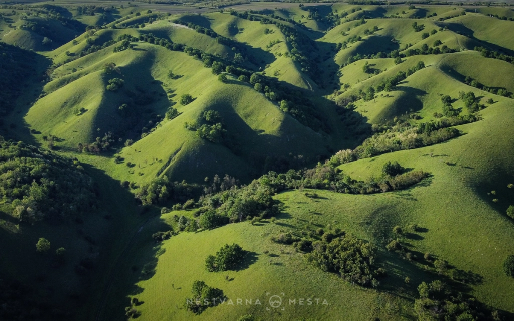
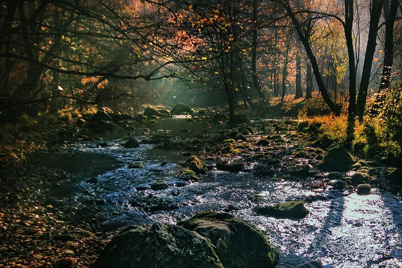
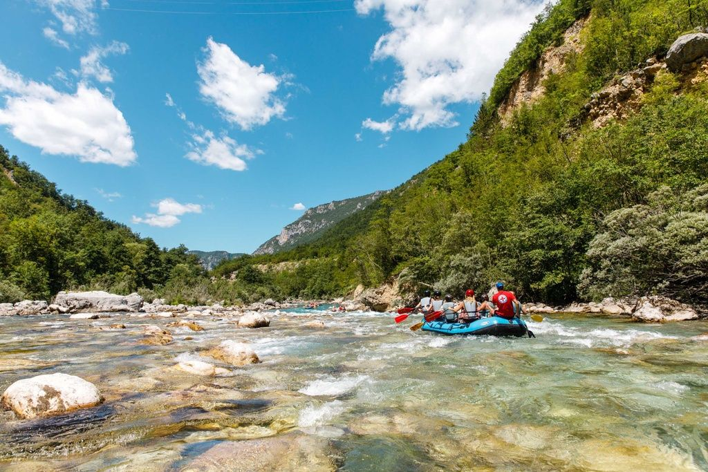
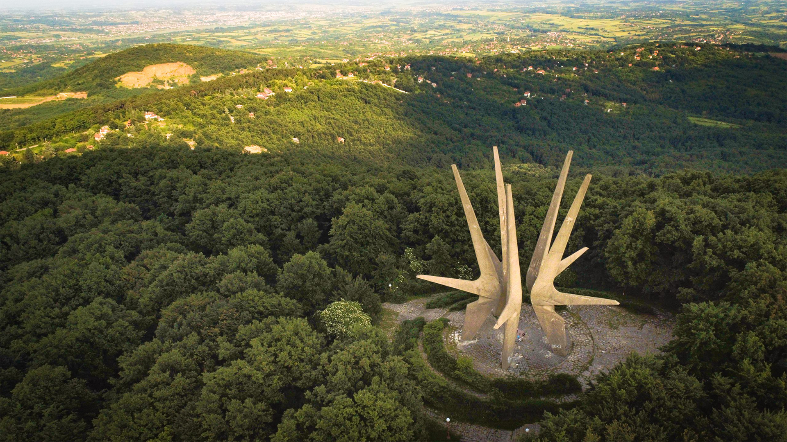

Creating Community, One Neighbor at a Time
At Neighborly, we believe that the heart of every vibrant community lies in the connections we build with those around us. Through acts of kindness, shared efforts, and mutual support, we strive to foster a sense of belonging and unity in every neighborhood. Whether you're offering a helping hand, seeking assistance, or looking to make a positive impact, Neighborly is your platform to connect with like-minded individuals dedicated to making our communities stronger and more compassionate. Join us in turning everyday actions into extraordinary changes, and together, let's create a better, more connected world!
My Projects

Zagajička Hills
Zagajička Hills, nestled in Serbia's countryside, offer picturesque landscapes and tranquil retreats for nature lovers. With rolling green hills and charming villages, it's an idyllic escape from city life. Perfect for hiking or leisurely strolls, Zagajička Hills promise serene moments amidst natural beauty.

Gradac river
The Gradac River, nestled in western Serbia, is renowned for its pristine beauty and tranquil surroundings. Flowing through lush landscapes and canyons, it offers a haven for nature lovers and outdoor enthusiasts. Popular for activities like hiking, fishing, and swimming, the river is a serene escape, showcasing Serbia's natural charm and biodiversity.

Tara River
Tara River in Montenegro captivates with its clear
waters and rugged charm, ideal for outdoor adventurers.
With thrilling rafting opportunities and breathtaking
canyon views, it's a haven for nature lovers. Surrounded
by lush forests and dramatic cliffs, Tara invites
visitors to explore its pristine wilderness. Whether
seeking excitement or serenity, Tara offers
unforgettable experiences.

Kosmaj Mountain
Kosmaj Mountain in central Serbia boasts scenic trails and rich biodiversity, perfect for outdoor enthusiasts. Its lush forests and rolling hills provide a tranquil escape, while ancient ruins add historical intrigue. Whether hiking or simply enjoying nature's beauty, Kosmaj offers an unforgettable experience in the heart of Serbia.